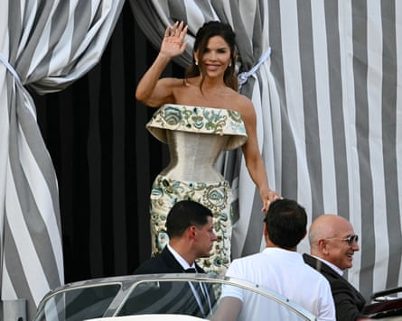

Amazon founder Jeff Bezos and journalist Lauren Sánchez held their wedding ceremony in Venice’s Grand canal on Friday, the centrepiece of a three-day gala that drew dozens of stars but also protests by local activists. Here are seven takeaways.
Jeff Bezos and Lauren Sánchez get on a taxi boat at the Aman hotel.Photograph: Stefano Rellandini/AFP/Getty Images